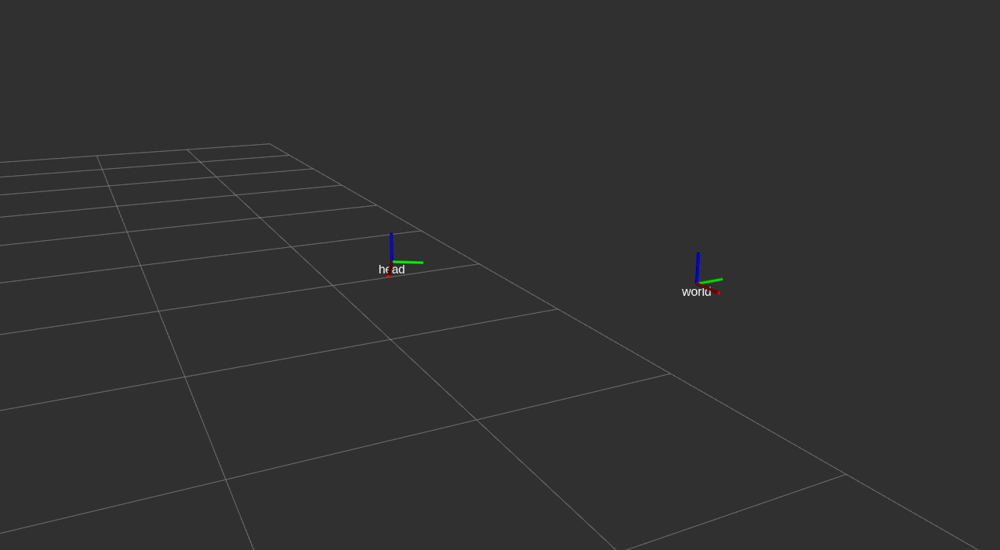
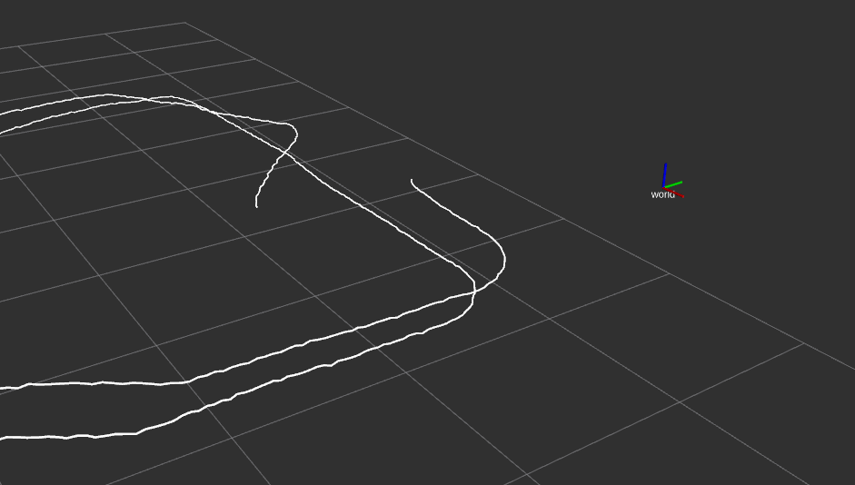
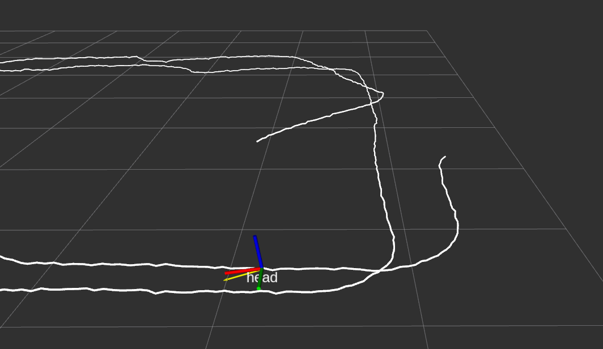

You can download this guide as a
Jupyter notebook.
ROS integration¶
rigid_body_motion supports certain ROS functionality, provided the Python environment has been set up with the required ROS packages. This guide assumes that you are at least somewhat familiar with ROS concepts such as nodes, publishers/subscribers and messages. If not, the ROS tutorials are a good place to start.
You also need to set up a couple of dependencies which can be done very conveniently if you are using an Anaconda Python distribution. See the ROS dependencies installation guide for further information.
Note
The following examples require the pooch, xarray, netcdf4 and ipywidgets libraries.
[1]:
import numpy as np
import pandas as pd
import rigid_body_motion as rbm
Loading data from rosbag files¶
Data can be loaded from rosbag files into numpy arrays. So far, geometry_msgs/TransformStamped and nav_msgs/Odometry messages are supported. This is done through the RosbagReader class:
[2]:
reader = rbm.ros.RosbagReader(rbm.example_data["rosbag"])
Downloading data from 'https://github.com/phausamann/rbm-data/raw/main/example.bag' to file '/home/runner/.cache/pooch/447a93042051dbc5689c8ed153185a15-example.bag'.
The reader can be used as a context manager to facilitate opening and closing of the rosbag. The get_topics_and_types method returns a dict with topic names and corresponding message types:
[3]:
with reader:
info = reader.get_topics_and_types()
info
[3]:
{'/pupil/left_eye/transform': 'geometry_msgs/TransformStamped',
'/pupil/right_eye/transform': 'geometry_msgs/TransformStamped',
'/t265/transform': 'geometry_msgs/TransformStamped'}
Note
If you get an ModuleNotFoundError: No module named 'rosbag' at this point, there is an issue with the ROS dependencies. See the ROS dependencies troubleshooting guide to fix this.
The data included in the example rosbag is from a head/eye tracking study and contains head-in-world pose estimated by the Intel RealSense T265 as well as eye-in-head pose for both eyes estimated by the Pupil Core eye tracker.
The load_messages method returns a dict with the data from a specified topic:
[4]:
with reader:
head = reader.load_messages("/t265/transform")
head
[4]:
{'timestamps': array([1.58060323e+09, 1.58060323e+09, 1.58060323e+09, ...,
1.58060357e+09, 1.58060357e+09, 1.58060357e+09]),
'position': array([[15.9316, 0.8211, 10.5429],
[15.9354, 0.8208, 10.5382],
[15.9393, 0.8204, 10.5335],
...,
[29.8883, 2.8952, 7.6317],
[29.8888, 2.8943, 7.6249],
[29.8892, 2.8935, 7.6182]]),
'orientation': array([[-0.9687, 0.0917, 0.2306, 0.0039],
[-0.969 , 0.0915, 0.2295, 0.005 ],
[-0.9693, 0.0912, 0.2285, 0.0061],
...,
[-0.9915, 0.0915, 0.0929, -0.0022],
[-0.9914, 0.0922, 0.0927, -0.0017],
[-0.9913, 0.0932, 0.0925, -0.001 ]])}
Now we can construct a reference frame tree with this data:
[5]:
rbm.register_frame("world")
The T265 uses the VR coordinate convention (x right, y up, z towards the back of the device) which differs from the default ROS convention (x forward, y left, z up):
[6]:
R_T265_ROS = np.array([[0.0, 0.0, -1.0], [-1.0, 0.0, 0.0], [0.0, 1.0, 0.0]])
rbm.ReferenceFrame.from_rotation_matrix(
R_T265_ROS, parent="world", name="t265/world"
).register()
The recorded data describes the transformation from the T265 world frame to the tracker frame:
[7]:
rbm.register_frame(
"t265/tracker",
parent="t265/world",
translation=head["position"],
rotation=head["orientation"],
timestamps=pd.to_datetime(head["timestamps"], unit="s"),
)
For visualization, we define an additional "head" frame that represents the tracker pose with the ROS coordinate convention:
[8]:
rbm.ReferenceFrame.from_rotation_matrix(
R_T265_ROS, parent="t265/tracker", name="head", inverse=True,
).register()
[9]:
rbm.render_tree("world")
world
└── t265/world
└── t265/tracker
└── head
Visualization with RViz¶
This section will show you how to broadcast reference frame transforms on the /tf topic as well as publish other messages that are useful for visualization in RViz. If you are not familiar with RViz and/or tf, check out the RViz user guide and the tf package documentation. You can download an .rviz file where all topics created in the following are already set up here.
We start by creating a node for this notebook with the init_node() method. This method will also automatically start a roscore when start_master=True and another ROS master isn’t already running:
[10]:
master = rbm.ros.init_node("rbm_vis", start_master=True)
started roslaunch server http://fv-az32-353:37593/
ros_comm version 1.15.9
SUMMARY
========
PARAMETERS
* /rosdistro: noetic
* /rosversion: 1.15.9
NODES
auto-starting new master
process[master]: started with pid [5050]
ROS_MASTER_URI=http://localhost:11311
setting /run_id to master
process[rosout-1]: started with pid [5060]
started core service [/rosout]
Transforms between reference frames can easily be broadcast on the /tf topic with the ReferenceFrameTransformBroadcaster class:
[11]:
tf_world_head = rbm.ros.ReferenceFrameTransformBroadcaster("head", base="world")
When calling publish the transform between world and head frame will be broadcast on the /tf topic. Since the head frame is a moving frame this will broadcast the first valid transform between the two frames by default:
[12]:
tf_world_head.publish()
RViz should now show both frames:

The broadcaster stores all valid transforms between the two frames in the translation, rotation and timestamps attributes:
[13]:
tf_world_head.translation.shape
[13]:
(66629, 3)
You can broadcast the transform between two frames at different points in time by specifying an index into these arrays as an argument to publish:
[14]:
tf_world_head.publish(1000)
Note
When “going back in time”, i.e., broadcasting transforms with timestamps older than the latest broadcast timestamp, RViz will not update the tf display and you may get a TF_OLD_DATA warning in the console. When this happens, click on the “Reset” button in the lower left corner in RViz.
The entire transformation between moving frames can be visualized with the ReferenceFrameMarkerPublisher which publishes the translation of all valid timestamps as a visualization_msgs/Marker message on the /<frame_name>/path topic:
[15]:
marker_publisher = rbm.ros.ReferenceFrameMarkerPublisher("head", base="world")
marker_publisher.publish()
[16]:
import rospy
rospy.get_published_topics("/head")
[16]:
[['/head/path', 'visualization_msgs/Marker']]
RViz should now show the trajectory of the head frame as a white line:

Next, we will load data from the Pupil Core eye tracker to demonstrate how multiple moving frames can be visualized. With the load_dataset method, the data is imported as an xarray.Dataset and cache=True enables local caching in the netCDF4 format for faster loading.
[17]:
with reader:
left_eye = reader.load_dataset("/pupil/left_eye/transform", cache=True)
left_eye = left_eye.dropna("time")
The transform between the T265 and the Pupil Core scene camera was determined in the study with a camera calibration routine and is provided here as hard-coded parameters:
[18]:
t_t265_pupil = (24.5e-3, -29e-3, 0.0)
r_t265_pupil = (-0.00125, -1.0, 6.3463e-05, 3.977e-06)
rbm.register_frame(
"pupil/scene_cam",
parent="t265/tracker",
translation=t_t265_pupil,
rotation=r_t265_pupil,
)
The reference frame of the left eye is constructed from the Dataset:
[19]:
rbm.ReferenceFrame.from_dataset(
left_eye,
"position",
"orientation",
"time",
parent="pupil/scene_cam",
name="pupil/left_eye",
).register()
The eye tracker data uses yet another coordinate convention (x right, y down, z forward) which we need to take into account when visualizing the eye frame:
[20]:
R_PUPIL_ROS = np.array([[0.0, -1.0, 0.0], [0.0, 0.0, -1.0], [1.0, 0.0, 0.0]])
rbm.ReferenceFrame.from_rotation_matrix(
R_PUPIL_ROS, parent="pupil/left_eye", name="left_eye"
).register(update=True)
[21]:
rbm.render_tree("world")
world
└── t265/world
└── t265/tracker
├── head
└── pupil/scene_cam
└── pupil/left_eye
└── left_eye
Now we create another broadcaster for the transform between head and eye frame. With publish_pose=True, the broadcaster also publishes a geometry_msgs/PoseStamped message on the /<frame_name>/pose topic. This message can be visualized in RViz as an arrow which avoids cluttering for frames that are close together. In order to publish messages in sync with the world/head transform, we specify subscribe="head". This way, the broadcaster checks for new messages on the /tf topic
where the child_frame_id is "head" and publishes its own transform with the closest timestamp:
[22]:
tf_head_left_eye = rbm.ros.ReferenceFrameTransformBroadcaster(
"left_eye", base="head", publish_pose=True, subscribe="head"
)
Calling the spin method dispatches the broadcaster to a separate thread where it will keep checking for new world/head transforms:
[23]:
tf_head_left_eye.spin()
Finally, the play_publisher method provides a notebook widget to play back data from a broadcaster. With step=2 it broadcasts every second transform and with speed=0.5 the data is played back at half the recorded speed:
[24]:
rbm.ros.play_publisher(tf_world_head, step=2, speed=0.5)
After pressing the play button, you should see the head frame moving along the white path, with the eye-in-head pose drawn as a yellow arrow:

Finally, if you have started the ROS master from Python, you should shut it down at the end:
[25]:
master.shutdown()
[rosout-1] killing on exit
[master] killing on exit